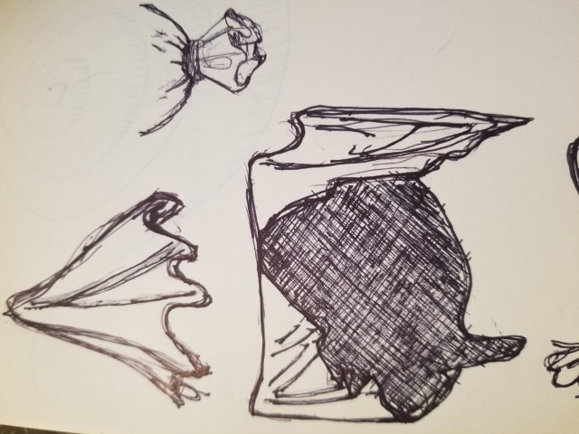
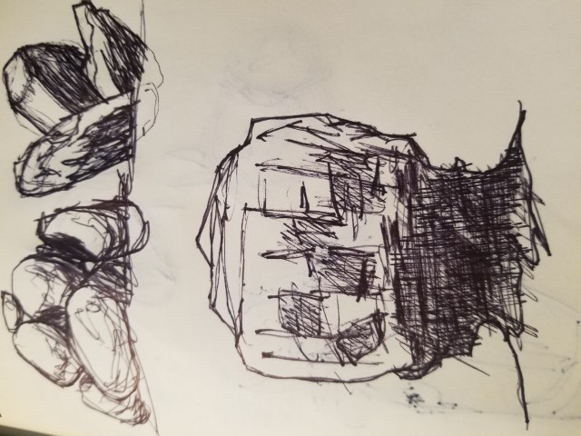
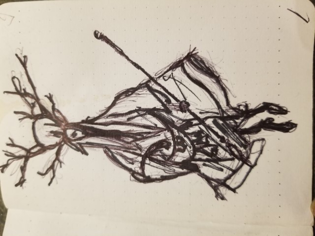

Following along with tutorials and courses is an excellent way to improve quickly. The knowledge given is not very impressive, but this is not the reason to use a tutorial. It has been my experience that artists love and prefer to draw what they are good at. This is not a good way to learn or improve. By surrendering yourself to not choosing what you will draw you will explore far more shapes and configurations than before. Another benefit is a Karate Kid effect, by starting with small simple objects a tutorial can trick you into practicing the basics before giving you a more complicated challenge. Presently I am Following along with tutorials by the Etherington Brothers. They have released several books of tutorials breaking down how they draw. Please support their work by checking our their books below.
Date: 2020 - 12 - 1 Notes: I think these tutorials were intended for either pencil drawing or perhaps digital drawing. I am using pens instead
Date: 2020 - 12 - 3 Notes: This feels rather sloppy but it still feels good to do it.
Date: 2020 - 12 - 4 Notes: This was very fun to do, but I am not as pleased with the outcome as I was with the procces.
